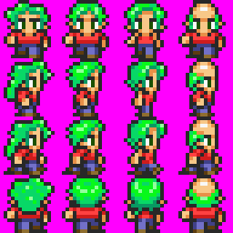

Built-in Sprites¶
Published on 2017-11-06 in µGame.
The RAM memory is quite limited on the SAMD21, which means that you can only load about 4 or 5 banks of graphics at once. But there is some free flash memory in the custom CircuitPython firmware, so we can put some stock graphics in there. So I’ve been working a little on drawing the character sprites for that:
The colors are all funny, because I tried to make them distinct, so that you can easily re-color the sprites by custom palettes (a palette is only 32 bytes, while a bank is 2048). I’m trying to standardize the color positions in the palette too, so that you can use the same palettes for recoloring multiple banks.
The characters are mostly inspired by the GameBoy, SNES and NES classics, though they are not exact copies of any game in particular. They should retain the general feel, though.